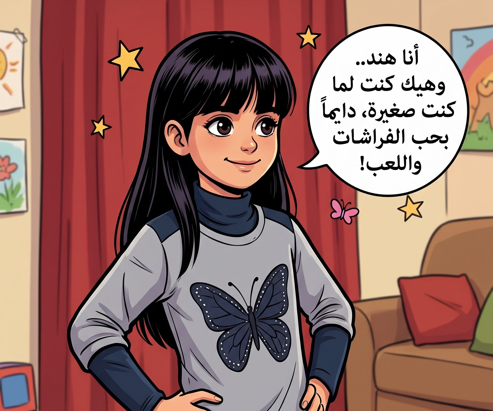
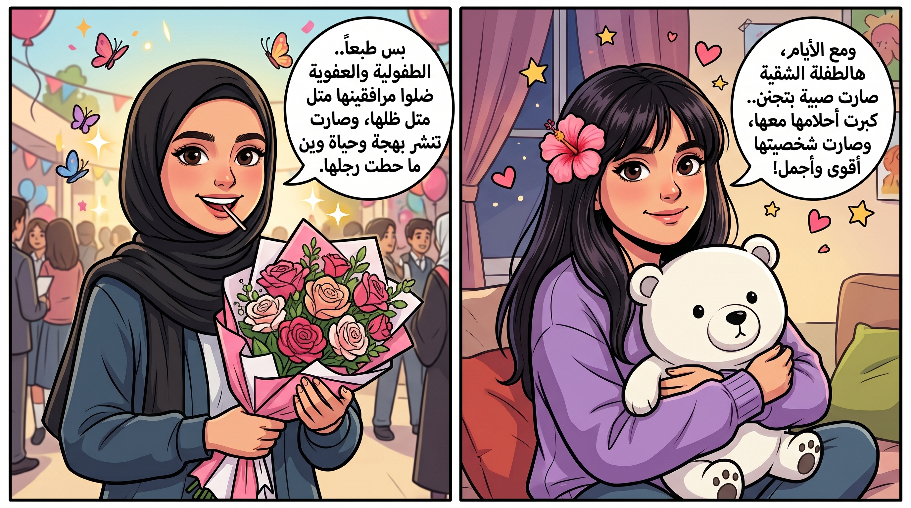
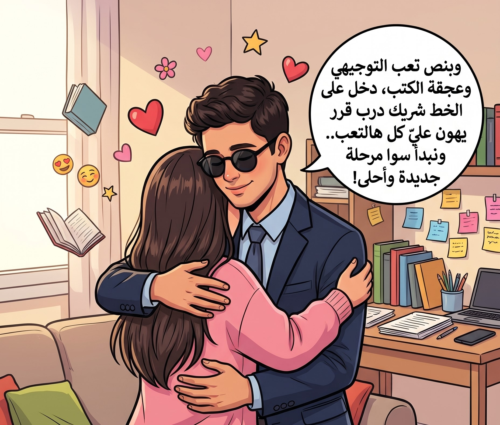
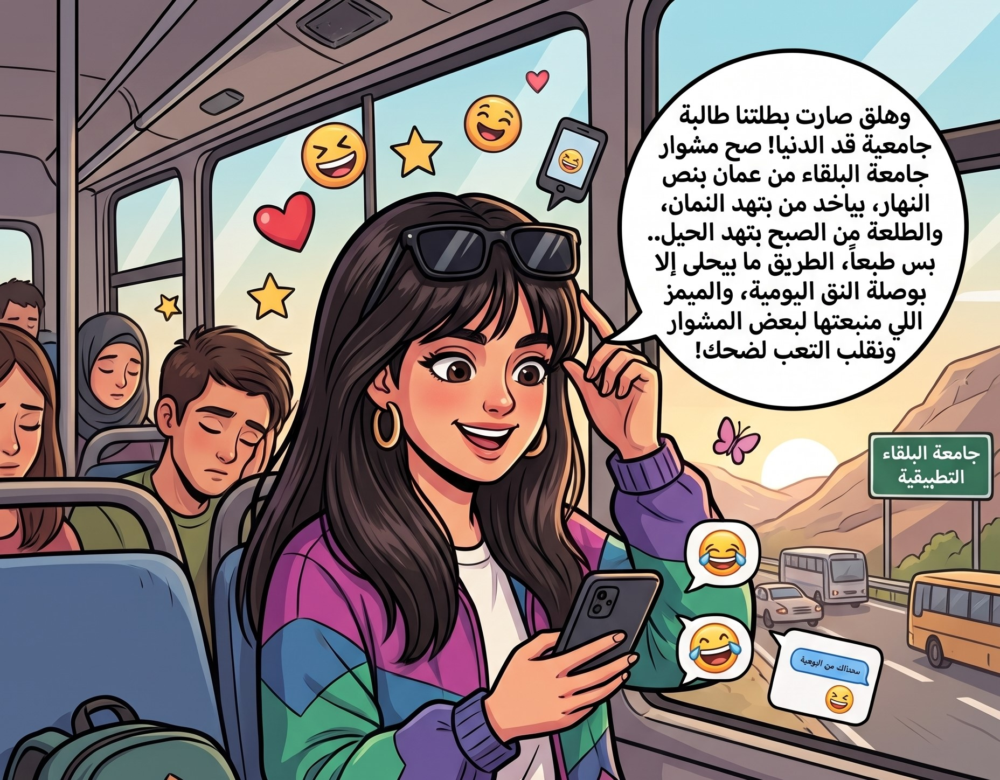

اربطي الحزام، وارفعي الصوت.. الحكاية رح تبدأ!

"كان يا ما كان.. في يوم مشمس وحلو، قررت بطلتنا الصغيرة تشرف على هالعالم! ومن أول نظرة، كان واضح إنها مو مجرد طفلة عادية.. عيونها البريئة كانت تخبي وراها طاقة ما بتخلص، وشقاوة لذيذة بتخلي الكل يركض وراها، وهي تضحك ولا على بالها!"
"كبرت بطلتنا شوي، وبلشت رحلة الاكتشافات العجيبة. كانت وين ما تروح تترك بصمتها الخاصة.. أسئلة ما بتخلص، فضول يوديها لمغامرات غريبة، وضحكة قادرة تقلب أي يوم هادي لمهرجان! حتى وقت الجد، كان دائماً عندها أسلوبها الخاص والمميز."

"ومع الأيام، هالطفلة الشقية صارت صبية بتجنن. كبرت أحلامها معها، وصارت شخصيتها أقوى وأجمل، بس طبعاً.. الروح الطفولية والعفوية ضلوا مرافقينها متل ظلها، وصارت تنشر بهجة وحياة وين ما حطت رجلها."

"وبعز عجقة التوجيهي، وبين الكتب، وتنسيق ألوان المكياج الذي لا يعوض وعشقها لكل تفصيلة أنيقة، دخل على الخط شخص قرر يكون رفيق هالدرب.. شخص يواكب طاقتها الحلوة، يهون عليها تعب الدراسة، ويضحك من قلبه على كل حركاتها وعفويتها! ومن يومها، خلصت مرحلة المدرسة، وبلشت سوا مرحلة جديدة وأحلى بكتير."

"وهلق صارت بطلتنا طالبة جامعية قد الدنيا! صح مشوار جامعة البلقاء من عمان بياخد نص النهار، والطلعة من الصبح بتهد الحيل.. بس طبعاً، الطريق ما بيحلى إلا بوصلة النق اليومية، والميمز اللي منبعتها لبعض لنهون المشوار ونقلب التعب لضحك! لأنك باختصار.. بطلة بكل تفاصيلك، وأحلى رفيقة بأجمل حكاية!"